| Observation | x | y |
|---|---|---|
| #1 | 1 | 1 |
| #2 | 4 | 4 |
| #3 | -4 | -3 |
| #4 | 2 | -2 |
| #5 | -2 | 4 |
The X-Y Space
Points
The scatterplot has two key aesthetics: the horizontal and vertical location of points (and lines). We refer to the horizontal location as “x” and the vertical location as “y.” We sometimes refer to this two-dimmensional space (of horizontal-vertical or x-y locations) as the “Cartesian coordinate system.”
The table below contains five observations. Each observation has values for variables x and y. (In the context of a data analysis, we typically think of x as the key explanatory variable and y as the outcome variable.)
The plot below shows the location of each point in the x-y space.
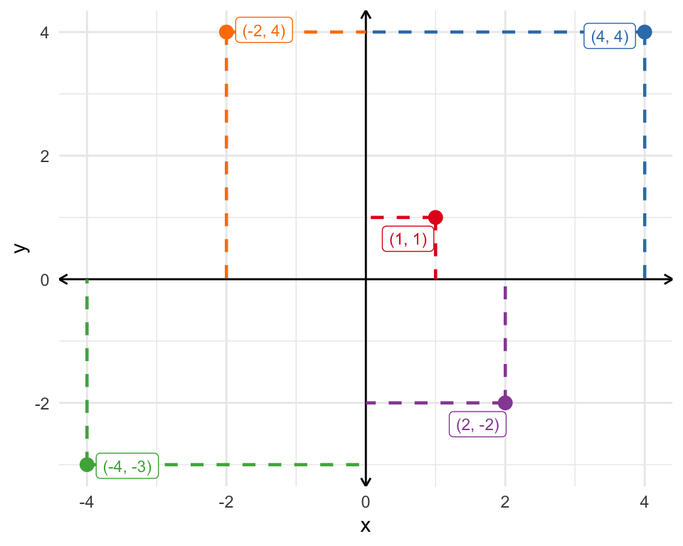
Exercise.
Recreate the x-y space below on a sheet of paper. Add the following points (0, 0), (1, 2), (-3, 4), (2, -3), and (-4, -2).
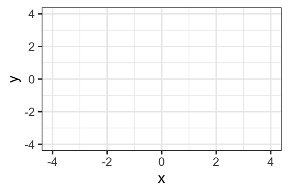
Hint
The first number in the (x, y) pair represents the “x” or horizontal location. The second number represents the “y” or vertical location. The location of the second point is…
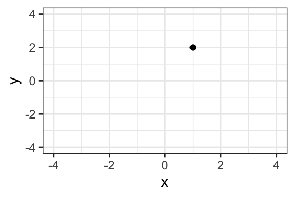
Solution
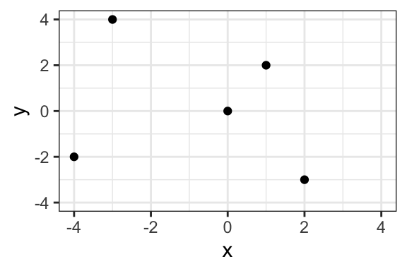
Lines
We can also draw lines in the x-y space. Remember, the formula for a line is \(y = mx + b\). Here, \(y\) and \(x\) represent variables (i.e., locations in the x-y space), \(m\) represents the slope of the line, and \(b\) represents the intercept.
Consider the following four examples:
| Example | Equation | Intercept | Slope |
|---|---|---|---|
| Example 1 | $y = x + 0$ | 0 | 1.0 |
| Example 2 | $y = -2x + 2$ | 2 | -2.0 |
| Example 3 | $y = 0.5x - 1$ | -1 | 0.5 |
| Example 4 | $y = 3x - 2$ | -2 | 3.0 |
The Intercept
The intercept \(b\) tells us where the line crosses the vertical slice of the space where \(x = 0\).
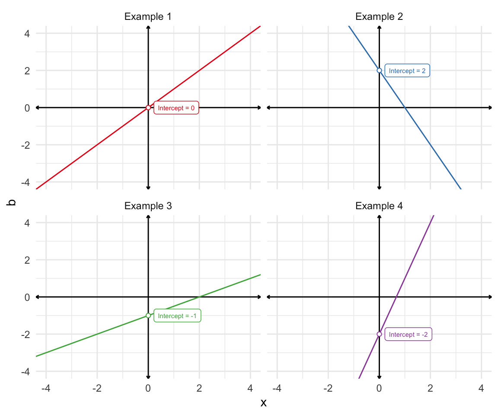
Exercise.
For the lines below, identify the intercept visually, if possible.
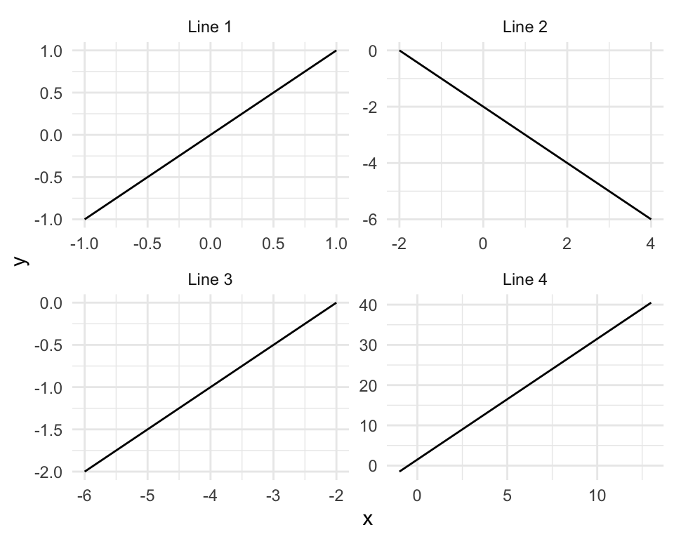
Hint
All the lines look like 45-degree lines (or 315-degree) because the ranges of the axes are rescaled. This makes the problem a little trickier.
For each line, identify where the line cross the slide of the space where \(x = 0\). When \(x = 0\), then \(y = m \times 0 + b = b\). Remember that \(b\) represents the intercept.Solution
The intercepts are 0, -2, 1, 1.5. You cannot see the third intercept visually, because the slice of the space where \(x = 0\) is not included in the plot.Slope
The slope \(m\) tells us how fast the line rises or falls as we move from left-to-right.
- If \(m\) is positive, then the line rises.
- If \(m\) is negative, then the line falls.
- If \(m\) is zero, then the line neither rises nor falls (stays constant at the same height).
- As \(m\) gets larger in magnitude, the line rises or falls faster.
The best way to think about slope is as the “rise over run.”
\(\text{slope} = \dfrac{\text{rise}}{\text{run}}\).
Take Example 2 from the table above or \(y = -2x + 2\). Consider two scenaarios: one where \(x = 0\) and another where \(x = 3\).
- When \(x = 0\), we know that \(y = 2\) because the intercept \(b\) equals 2.
- When \(x = 3\), we have “run” 3 units to the right (i.e., \(\text{run} = \text{2nd value} - \text{1st value} = 3 - 0 = 3\)) and \(y = -2 \times 3 + 2 = -6 + 2 = -4\). When we run 3 units, we rise \(-4 - 2 = -6\) units (or fall 6 units).
The table below summarizes our work.
| Scenario | x | y |
|---|---|---|
| Scenario 1 | 0 | 2 |
| Scenario 2 | 3 | -4 |
\(\text{run} = x \text{ in Scenario 2} - x \text{ in Scenario 1} = 3 - 0 = 3\)
\(\text{rise} = y \text{ in Scenario 2} - y \text{ in Scenario 1} = -4 - 2 = -6\)
\(\text{slope} = \dfrac{\text{rise}}{\text{run}} = \dfrac{-6}{3} = -2\)
These calculations match the slope we find by inspecting the original equation \(y = -2x + 2\).
The figure below shows the rise-over-run logic for each of the four example equations.
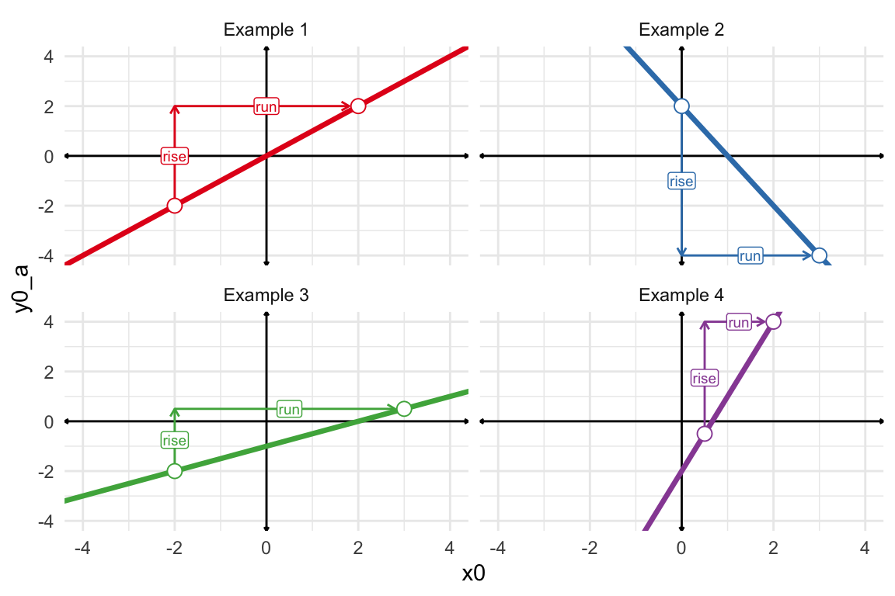
Exercise.
Add the lines \(y = 2x - 1\) and \(y = -0.5x + 1\) to the figure you sketched in the earlier exercise (add-points).
Hint
Remember that a line is completely defined by only two points. Use this rule to draw the line. Choose two values of \(x\) and find the corresponding value of \(y\). Ideally, choose two values of \(x\) that are separated by some distance (so long as the resulting x-y pairs remain on our plot). Let’s try the first line using \(x = -1\) and \(x = 2\). For the first equation, we have \(y = 2 \times -1 -1 = -2 - 1 = -3\) and \(y = 2 \times 2 -1 = 4 - 1 = 3\), respectively. Then our two points are (-1, -3) and (2, 3), respectively. Just add lightly add these two points to the plot and draw a line that goes through both.
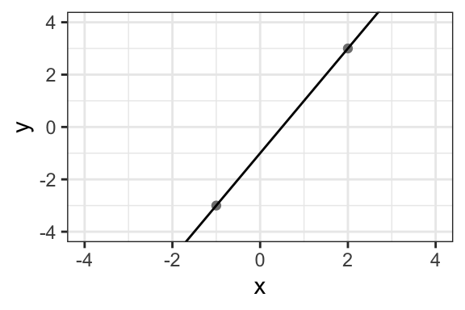
Solution
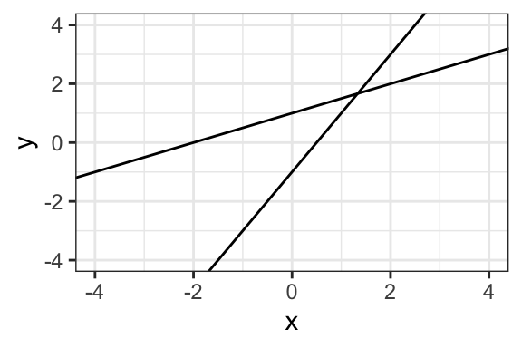
Exercise.
What is the slope and intercept of the line below?
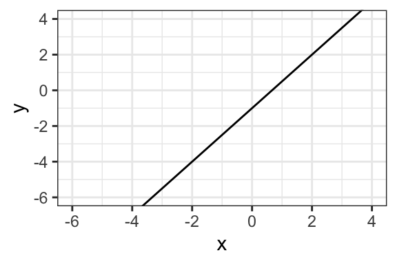
Hint
To find the intercept, find where the line crosses the vertical slide at \(x = 0\). This gives the intercept directly. To find the slope, simple choose two points along the line and find the rise (i.e., the vertical distance between the two points) and the run (i.e., the horizontal distance between the two points). The slope is the rise over the run or \(\text{slope} = \dfrac{\text{rise}}{\text{run}}\).Solution
The intercept is -1 and the slope is 1.5, so the equation for the line is \(y = 1.5x - 1\).Exercise.
What is the slope and intercept of the line below?
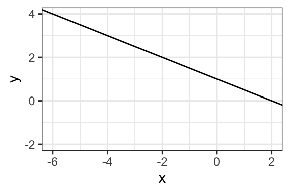